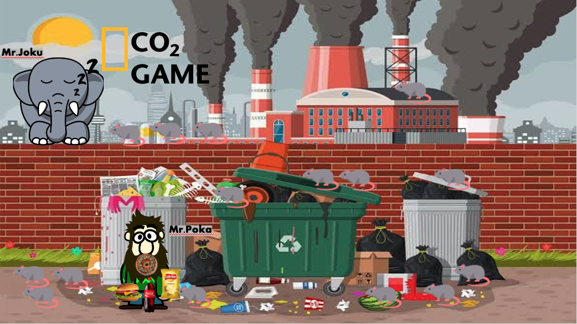

Many pollutants take the form of particles suspended in the air. These particles can come from natural resources
(forest fires, sea spray, volcanic eruptions) or from human activity CO2 (industrial activities, transportation)
Do you want to know more about this game, please click in this link
